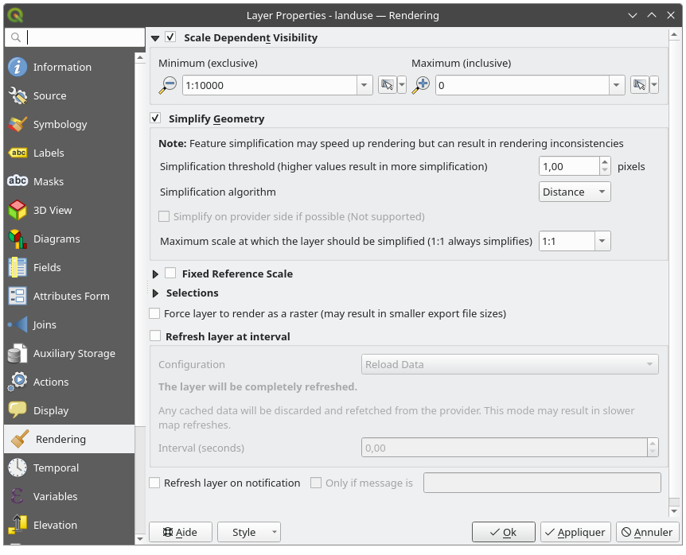
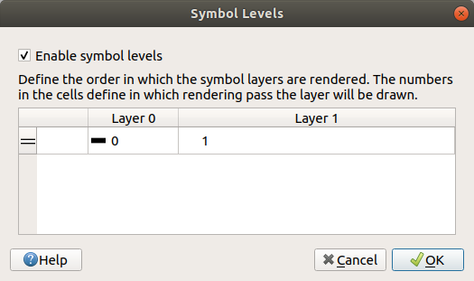
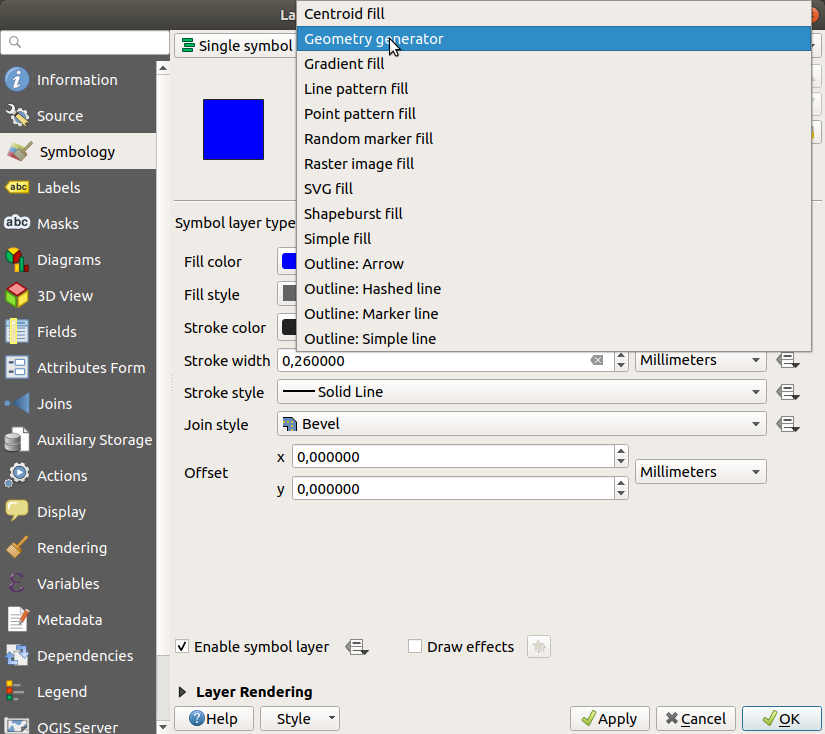
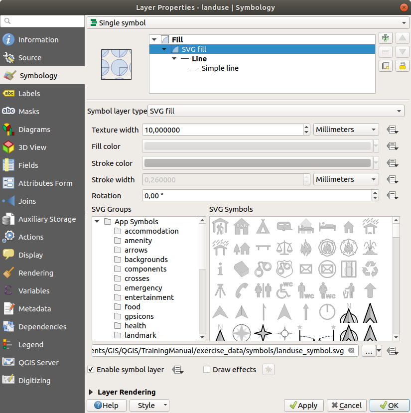

2.4. သင်ခန်းစာ- သင်္ကေတဆိုင်ရာ (Lesson: Symbology)
Layer တစ်ခု၏ သင်္ကေတဆိုင်ရာသည် ၎င်းကို မြေပုံပေါ်တွင်မြင်ရသော အသွင်အပြင်ဖြစ်ပါသည်။ တည်နေရာဆိုင်ရာရှုထောင့်အရ data များကို ကိုယ်စားပြုဖော်ပြရာတွင် အခြားနည်းလမ်းများထက် GIS ၏အခြေခံအားသာချက်မှာ data များကို ပုံသေမဟုတ်ပဲ ပြောင်းလဲမှုရှိစွာ ကိုယ်စားပြုဖော်ပြနိုင်ခြင်းဖြစ်သည်။
ထို့ကြောင့် မြေပုံ၏အမြင်ပိုင်းဆိုင်ရာအသွင်အပြင် (layer တစ်ခုချင်းစီ၏ သင်္ကေတဆိုင်ရာပေါ်တွင် မူတည်သော) သည် အလွန်အရေးကြီးပါသည်။ သင်ရေးဆွဲလိုက်သော မြေပုံကိုသုံးစွဲသူသည် မြေပုံပေါ်ရှိကိုယ်စားပြုအရာများကို လွယ်ကူစွာမြင်နိုင်စေရန် လိုအပ်ပါသည်။ သင့်အနေဖြင့် အလုပ်လုပ်နေသော data များကို ဖော်ထုတ်ကြည့်ရှုရာတွင် သင်္ကေတဆိုင်ရာကို ကောင်းကောင်းမွန်မွန်ပြုလုပ်ထားခြင်းသည် များစွာ အထောက်အကူဖြစ်စေပါသည်။
တနည်းအားဖြင့် သင့်တော်ကောင်းမွန်သော သင်္ကေတဆိုင်ရာ ရှိခြင်းသည် မလိုအပ်တာများလုပ်ဆောင်ခြင်းမဟုတ်သလို ရှိရန် ကောင်းရုံသာ မဟုတ်ပါ။ အမှန်အားဖြင့် GIS ကို ကောင်းမွန်စွာအသုံးပြုပြီး လူအများအသုံးပြုနိုင်စေရန် မြေပုံနှင့်အချက်အလက်များကို ထုတ်လုပ်ပေးရာတွင် ၎င်းသည် သင့်အတွက် မရှိမဖြစ်လိုအပ်သောအရဖြစ်ပါသည်။
ဤသင်ခန်းစာအတွက် ရည်မှန်းချက်- မည်သည့် vector layer အတွက်မဆို သင်လိုချင်သော သင်္ကေတများဖန်တီးနိုင်စေရန်။
2.4.1. ★☆☆ လိုက်လုပ်ကြည့်ပါ- အရောင်များပြောင်းလဲခြင်း (Follow Along: Changing Colors)
Layer တစ်ခု၏ သင်္ကေတကို ပြောင်းလဲရန် ၎င်း layer ၏ Layer Properties ကိုဖွင့်ပါ။ landuse layer ၏အရောင်ကို ဦးစွာပြောင်းလဲကြည့်ရအောင်။
Layer များစာရင်းထဲရှိ
landuselayer ပေါ်တွင် right-click နှိပ်ပါ။ပေါ်လာသော menu ထဲမှ Properties… ကိုရွေးချယ်ပါ။
Note
Default အားဖြင့် Layer များစာရင်းထဲရှိ layer ပေါ်တွင် click ၂ ချက်နှိပ်ခြင်းအားဖြင့် layer ၏ property များကို ဖွင့်နိုင်ပါသည်။
Tip
Layers panel ထိပ်ရှိ
 ခလုတ်သည် Layer Styling panel ကိုပွင့်စေပါသည်။ ထို panel ကိုသုံး၍ layer ၏ property များအချို့ကို ပြောင်းလဲပေးနိုင်ပါသည်- default အားဖြင့် ပြောင်းလဲမှုများကို ချက်ချင်းအသုံးပြုပေးမည်ဖြစ်သည်။
ခလုတ်သည် Layer Styling panel ကိုပွင့်စေပါသည်။ ထို panel ကိုသုံး၍ layer ၏ property များအချို့ကို ပြောင်းလဲပေးနိုင်ပါသည်- default အားဖြင့် ပြောင်းလဲမှုများကို ချက်ချင်းအသုံးပြုပေးမည်ဖြစ်သည်။Layer Properties window ထဲတွင်
Symbology tab ကို ရွေးချယ်ပါ-
Color အညွှန်းဘေးရှိ အရောင်ရွေးချယ်သည့်ခလုတ်ကို နှိပ်ပါ။ စံအရောင်များပါဝင်သော dialog ပွင့်လာပါမည်။
မီးခိုးရောင် (Gray) ကိုရွေးချယ်ပြီး OK ကိုနှိပ်ပါ
Layer Properties window ထဲတွင် OK ကို ထပ်နှိပ်ပါ၊ ထို့နောက် layer တွင် အရောင်ပြောင်းလဲသွားသည်ကို မြင်တွေ့ရမည်ဖြစ်သည်။
2.4.2. ★☆☆ မိမိကိုယ်တိုင်ကြိုးစားကြည့်ပါ- (Try Yourself:)
water layer ၏အရောင်ကို အပြာနုရောင် (light blue) သို့ပြောင်းလဲပါ။ Layer Properties menu အစား Layer Styling panel ကိုအသုံးပြုကြည့်ပါ။
အဖြေ
ပြောင်းလဲလိုသည့်အတိုင်း အရောင်များ ပြောင်းလဲခြင်းရှိမရှိကို အတည်ပြုပါ။
ရည်ညွှန်းချက်ထဲရှိ
waterlayer ကိုရွေးပြီး Open the Layer Styling panel ခလုတ်ပေါ်တွင် click နှိပ်ပါ။ ရေ layer နှင့်ကိုက်ညီမည့် အရောင်တစ်ခုသို့ ပြောင်းလဲပါ။
တစ်ကြိမ်တွင် layer တစ်ခုတွင်သာ လုပ်ဆောင်လိုပြီး အခြား layer များမပါစေလိုသောအခါ layer စာရင်းထဲရှိ layer အမည်၏ဘေးရှိ အမှန်ခြစ် box ကိုနှိပ်ခြင်းဖြင့် layer တစ်ခုကို ဖျောက်ထားနိုင်ပါသည်။ Box သည် အမှန်ခြစ်မဟုတ်ပဲ ဗလာဖြစ်နေလျှင် layer သည် ပျောက်နေမည်ဖြစ်သည်။
2.4.3. ★☆☆ လိုက်လုပ်ကြည့်ပါ- သင်္ကေတဖွဲ့စည်းပုံကိုပြောင်းလဲခြင်း (Follow Along: Changing Symbol Structure)
Layer ၏အရောင်တင်မကပဲ ပိုများသော သင်္ကေတဆိုင်ရာများ ရှိပါသည်။ နောက်ထပ်အနေဖြင့် မြေပုံကို အမြင်ပိုင်းအရ ရှုပ်ပွမှုနည်းစေရန် မတူညီသော မြေအသုံးချမှုဧရိယာ (land use areas) များအကြားရှိ မျဉ်းများကို ဖယ်ရှားချင်ပါသည်။
landuselayer အတွက် Layer Properties window ကိုဖွင့်ပါ။ Symbology tab အောက်တွင် ယခင်ကအတိုင်း dialog ကိုတွေ့ရပါမည်။ သို့သော် ဒီတစ်ကြိမ်မှာတော့ အရောင်ကို ခပ်မြန်မြန်ပြောင်းလဲခြင်းထက် ပိုသောအရာများကိုလုပ်ဆောင်နေခြင်း ဖြစ်ပါသည်။သင်္ကေတ layer ဖွဲ့စည်းပုံထဲတွင် Fill dropdown ကို ဖြန့်ကြည့်လိုက်ပြီး Simple fill ကိုရွေးချယ်ပါ။
Stroke style dropdown ပေါ်တွင် click နှိပ်ပါ။ ထိုအချိန်တွင် မျဉ်းတိုတစ်ကြောင်းနှင့် Solid Line စာလုံးကို ပြသေနေပါလိမ့်မည်။
၎င်းကို No Line သို့ပြောင်းလဲပါ။

OK ကိုနှိပ်ပါ။
ယခုအခါ landuse layer တွင် ဧရိယာများအကြား မည်သည့်မျဉ်းမှ ရှိတော့မည်မဟုတ်ပါ။
2.4.4. ★☆☆ မိမိကိုယ်တိုင်ကြိုးစားကြည့်ပါ- (Try Yourself:)
waterlayer ၏သင်္ကေတကို အပြာရင့်ရောင် ဘောင်မျဉ်း (outline) ရအောင် ထပ်မံပြောင်းလဲကြည့်ပါ။riverslayer ၏ သင်္ကေတကို သင့်တင့်သော ရေလမ်းကြောင်းပုံစံတစ်ခု ပြောင်းလဲကြည့်ပါ။
Open the Layer Styling panel ခလုတ်ကိုအသုံးပြုပြီး ပြောင်းလဲမှုများကို ချက်ချင်းမြင်တွေ့နိုင်သည်ကို မမေ့ပါနှင့်။ ထို panel တွင် layer တစ်ခုကို သင်္ကေတဆိုင်ရာပြောင်းလဲစဉ်တွင် ပြောင်းလဲမှုတစ်ခုချင်းစီကို undo ပြုလုပ်နိုင်ပါသည်။
အဖြေ
သင့်မြေပုံသည် ဤပုံစံအတိုင်း ဖြစ်သင့်ပါသည်-
သင့်အနေဖြင့် ယခုမှစတင်အသုံးပြုသူတစ်ယောက်ဖြစ်လျှင် ဤနေရာတွင် ရပ်ထားနိုင်ပါသည်။
ကျန်ရှိနေသော layer များအားလုံးအတွက် အထက်တွင်ဖော်ပြခဲ့သောနည်းလမ်းကို အသုံးပြုပြီး အရောင်နှင့် style များကို ပြောင်းလဲပါ။
အရာဝတ္ထုများအတွက် သဘာဝအရောင်များကို စမ်းသုံးကြည့်ပါ။ ဥပမာ- လမ်းတစ်ခုဆိုလျှင် အနီရောင် သို့မဟုတ် အပြာရောင် မဖြစ်သင့်ပဲ မီးခိုးရောင် သို့မဟုတ် အနက်ရောင် ဖြစ်နိုင်ပါသည်။
အမျိုးမျိုးသော Fill style များဖြင့် စမ်းသပ်ကြည့်ပြီး polygon များအတွက် Stroke style setting များကိုစမ်းသပ်ကြည့်ပါ။
2.4.5. ★★☆ လိုက်လုပ်ကြည့်ပါ- စကေးပေါ်မူတည်ပြီး မြင်ရနိုင်မှု (Follow Along: Scale-Based Visibility)
တစ်ခါတရံ layer တစ်ခုသည် ပေးထားသောစကေးတစ်ခုအတွက် မကိုက်ညီသည်ကို တွေ့ရပါလိမ့်မည်။ ဥပမာ- ကမ္ဘာ့တိုက်ကြီးများအားလုံး၏ dataset သည် အသေးစိတ်မှုနည်းပါးပြီး လမ်းအဆင့် (street level) ၌ အလွန်တိကျမှုမရှိနိုင်ပါ။ ထိုသို့ဖြစ်သောအခါ သင့်အနေဖြင့် dataset ကို မသင့်လျော်သော စကေးများ၌ ဖျောက်ထားချင်လိမ့်မည်။
ဤကိစ္စရပ်တွင် အဆောက်အဦများကို စကေးအသေးများ၌ မမြင်ရအောင် ဖျောက်ထားရန်ဆုံးဖြတ်နိုင်ပါသည်။ ဥပမာ- ဤမြေပုံသည် အလွန်အသုံးမဝင်ပါ။ အဆောက်အဦများကို ထိုစကေး၌ ခွဲခြားရန် ခက်ခဲပါသည်။
စကေးပေါ်မူတည်ပြီး ပုံဖော်ပြသခြင်းကို လုပ်ဆောင်ရန်-
buildingslayer အတွက် Layer Properties dialog ကိုဖွင့်ပါ။ Rendering tab ကို activate လုပ်ပါ။
Rendering tab ကို activate လုပ်ပါ။Scale dependent visibility ဆိုသော checkbox တွင် click နှိပ်ပြီး စကေးပေါ်မူတည်ပြီး ပုံဖော်ပြသခြင်းကို အသုံးပြုနိုင်အောင်ဖွင့်ပေးပါ-
Minimum တန်ဖိုးကို
1:10000သို့ပြောင်းလဲပါ။ OK ကိုနှိပ်ပါ။
မြေပုံတွင် zoom အချုံ့/အချဲ့ပြုလုပ်ကြည့်ပြီး စမ်းသပ်ကြည့်ပါ။ buildings layer သည် မည်သည့်အချိန်တွင် ပျောက်သွားပြီး မည်သည့်အချိန်တွင် ပြန်ပေါ်လာသည်ကို သတိထားကြည့်ပါ။
Note
Mouse ဘီးလုံးကို အသုံးပြုပြီး အဆင့်အလိုက် zoom ချဲ့ကြည့်နိုင်ပါသည်။ နောက်တစ်နည်းအားဖြင့် zoom tool များကို အသုံးပြုနိုင်ပါသည်။


2.4.6. ★★☆ လိုက်လုပ်ကြည့်ပါ- သင်္ကေတ layer များ ထည့်သွင်းခြင်း (Follow Along: Adding Symbol Layers)
ယခုဆိုလျှင် သင့်အနေဖြင့် layer များအတွက် ရိုးရိုးရှင်းရှင်း သင်္ကေတပြောင်းလဲနည်းကို သိရှိပြီးဖြစ်ပါသည်။ နောက်တစ်ဆင့်အနေဖြင့် ပိုမိုရှုပ်ထွေးသော သင်္ကေတဆိုင်ရာများ ဖန်တီးသွားမည်ဖြစ်ပါသည်။ QGIS တွင် သင်္ကေတ layer များအသုံးပြု၍ ၎င်းတို့ကို ဖန်တီးနိုင်ပါသည်။
landuselayer ၏ သင်္ကေတ property panel ကိုပြန်သွားပါ (သင်္ကေတ layer များဖွဲ့စည်းပုံထဲရှိ Simple fill ကို click နှိပ်ခြင်းဖြင့်)။ဤဥပမာတွင် လက်ရှိ သင်္ကေတ၌ ဘောင်မျဉ်း (outline) မပါရှိ (ဆိုလိုသည်မှာ- No Line border style ကိုအသုံးပြုထားခြင်းဖြစ်သည်)။
ဖွဲ့စည်းပုံထဲတွင် Fill အဆင့်ကို ရွေးချယ်ပြီး
 Add symbol layer ခလုတ်ကိုနှိပ်ပါ။ သင်္ကေတ layer အသစ်တစ်ခုထည့်သွင်းထားပြီးသော dialog ပုံစံကို အောက်ပါအတိုင်းမြင်တွေ့ရမည်ဖြစ်သည်-
Add symbol layer ခလုတ်ကိုနှိပ်ပါ။ သင်္ကေတ layer အသစ်တစ်ခုထည့်သွင်းထားပြီးသော dialog ပုံစံကို အောက်ပါအတိုင်းမြင်တွေ့ရမည်ဖြစ်သည်-တစ်ကြိမ်နှင့်တစ်ကြိမ် ပေါ်လာမည့် အရောင်သည် မတူညီနိုင်ပါ၊ သို့သော် အရောင်ပြောင်းလဲနိုင်ပါသည်။
ယခုဆိုလျှင် ဒုတိယ သင်္ကေတ layer တစ်ခုရှိနေပြီဖြစ်ပါသည်။ Solid (အပြည့်ဖြည့်ထားသော) အရောင် ဖြစ်နေသောကြောင့် ယခင်ထည့်သွင်းထားသော သင်္ကေတကို လုံးလုံးဖုံးအုပ်နေပါလိမ့်မည်။ ထို့အပြင် မလိုချင်သော Solid Line border style တစ်ခုရှိနေပါသည်။ ထို သင်္ကေတကို ပြောင်းလဲရတော့မည်ဖြစ်သည်။
Note
မြေပုံ layer တစ်ခုနှင့် သင်္ကေတ layer တစ်ခုအကြားကွဲပြားမှုကို နားလည်ရန် အရေးကြီးပါသည်။ မြေပုံ layer တစ်ခုသည် မြေပုံထဲသို့ ထည့်သွင်းထားသော vector (သို့မဟုတ် raster) တစ်ခုဖြစ်ပါသည်။ သင်္ကေတ layer တစ်ခုဆိုသည်မှာ မြေပုံ layer တစ်ခုကို ကိုယ်စားပြုဖော်ပြရန် အသုံးပြုသည့် သင်္ကေတ၏အစိတ်အပိုင်းဖြစ်ပါသည်။ ဤသင်တန်းတွင် မြေပုံ layer တစ်ခုကို layer တစ်ခုဟုသာ အမြဲလိုလို ရည်ညွှန်းခေါ်ဆိုပါလိမ့်မည်။ သို့သော် မရှုပ်ထွေးစေရန် သင်္ကေတ layer တစ်ခုကို သင်္ကေတ layer တစ်ခုဟုသာ အမြဲတမ်း ခေါ်ဆိုသုံးစွဲပါလိမ့်မည်။
ရွေးချယ်ထားသော Simple Fill သင်္ကေတ layer အသစ်ဖြင့်-
ယခင်ကပြုလုပ်ခဲ့သည့်အတိုင်း border style ကို No Pen ဟုသတ်မှတ်ပါ။
Fill (အဖြည့်) style ကို Solid သို့မဟုတ် No brush မဟုတ်သော အခြားတစ်ခုခုသို့ ပြောင်းလဲပါ။ ဥပမာ-

OK ကိုနှိပ်ပါ။
ယခုဆိုလျှင် သင်ပြုလုပ်ထားသော ရလာဒ်ကို မြင်တွေ့နိုင်ပြီး လိုအပ်သလို ညှိနိုင်ပါသည်။ နောက်ထပ် သင်္ကေတ layer အများအပြားကို ထပ်မံထည့်သွင်းနိုင်ပြီး layer အတွက် အသွင်အပြင် (texture) တစ်ခုဖန်တီးပေးနိုင်ပါသည်။

တကယ့်မြေပုံအစစ်တစ်ခုထဲတွင် အသုံးပြုရမည့် အရောင်အများအပြား ရှိကောင်းရှိနေနိုင်ပါသည်။
2.4.7. ★★☆ မိမိကိုယ်တိုင်ကြိုးစားကြည့်ပါ- (Try Yourself:)
အထက်တွင်ဖော်ပြခဲ့သော နည်းလမ်းများကိုအသုံးပြု၍ buildings layer အတွက် ရိုးရိုးသင်္ကေတတစ်ခု ဖန်တီးကြည့်ပါ။
အဖြေ
buildings layer ကို သင့်စိတ်ကြိုက် ပြင်ဆင်သတ်မှတ်ပါ။ သို့သော် မြေပုံပေါ်တွင် အခြား layer များနှင့် မတူညီအောင် ပြောင်းလဲပါ။
ဤဥပမာကိုကြည့်ပါ-

2.4.8. ★★☆ လိုက်လုပ်ကြည့်ပါ- သင်္ကေတအဆင့်များ စီခြင်း (Follow Along: Ordering Symbol Levels)
သင်္ကေတ layer များကို ပုံဖော်ပြသရာတွင် မြေပုံ layer အမျိုးမျိုးကို ပုံဖော်ပြသသည့်အတိုင်း ၎င်းတို့ကို အစဉ်လိုက် ပုံဖော်ပြသပါသည်။ ဆိုလိုသည်မှာ အချို့ကိစ္စရပ်များတွင် သင်္ကေတတစ်ခုထဲတွင် သင်္ကေတ layer အများအပြားရှိခြင်းသည် မလိုလားအပ်သော ရလာဒ်များကို ထွက်လာစေပါသည်။
roadslayer တွင် ထပ်ဆောင်း သင်္ကေတ layer တစ်ခုထပ်ထည့်ပါ (အထက်တွင် ဖော်ပြခဲ့သော သင်္ကေတ layer များထပ်ထည့်ခြင်းနည်းလမ်းကို အသုံးပြု၍)Stroke width ကို
1.5ထားပြီး အရောင်ကို အနက်ရောင် ထားပေးပါ။ထိပ်ဆုံး layer အသစ်တစ်ခုကို အထူ (thickness)
0.8ထားပြီး အရောင်ကို အဖြူရောင် ထားပေးပါ။
အောက်ပါအတိုင်းဖြစ်သွားပါလိမ့်မည်-

လမ်းများတွင် လမ်းသွယ် ပုံစံ သင်္ကေတတစ်ခုရှိသွားမည်ဖြစ်သည်၊ သို့သော် မြင်တွေ့ရသည့်အတိုင်း မျဉ်းများတစ်ခုနှင့်တစ်ခုဆုံဖြတ်သည့်နေရာတွင် မျဉ်းအချင်းချင်းထပ်နေပါသည်။ မိမိတို့လိုချင်သည်မှာ ထိုပုံစံအတိုင်းမဟုတ်ပါ။
ထိုသို့မဖြစ်စေရန် သင်္ကေတအဆင့်များကို စီနိုင်ပြီး သင်္ကေတ layer အမျိုးမျိုးအား မည်သည့် အစီအစဉ် (order) ဖြင့်ပုံဖော်ပြသမည်ကို ထိန်းချုပ်ပေးနိုင်ပါသည်။
သင်္ကေတ layer များ၏ order ကို ပြောင်းလဲရန်-
သင်္ကေတာ layer များဖွဲ့စည်းပုံထဲရှိ ထိပ်ဆုံးရှိ Line layer ကို ရွေးပါ။
Window ၏ညာဘက်အောက်ထောင့်ရှိ ကိုနှိပ်ပါ။

အောက်ပါပုံစံ dialog တစ်ခုပွင့်လာပါလိမ့်မည်-

 Enable symbol levels ကို အမှန်ခြစ်ပါ။ ထို့နောက်တွင် သက်ဆိုင်ရာအဆင့် နံပါတ်ကို ရိုက်ထည့်ပြီး သင်္ကေတတစ်ခုချင်းစီ၏ layer order ကို သတ်မှတ်ပေးနိုင်ပါသည်။ 0 သည် အောက်တွင်ရှိသော layer ဖြစ်သည်။
Enable symbol levels ကို အမှန်ခြစ်ပါ။ ထို့နောက်တွင် သက်ဆိုင်ရာအဆင့် နံပါတ်ကို ရိုက်ထည့်ပြီး သင်္ကေတတစ်ခုချင်းစီ၏ layer order ကို သတ်မှတ်ပေးနိုင်ပါသည်။ 0 သည် အောက်တွင်ရှိသော layer ဖြစ်သည်။ဤဥပမာတွင် အောက်ပါအတိုင်း option ကို ပွင့်အောင် activate လုပ်ချင်ရုံသာဖြစ်သည်-
 ၎င်းသည် အနက်ရောင်မျဉ်းအထူအပေါ်တွင် အဖြူရောင်မျဉ်းကို ပုံဖော်ပြသပေးပါလိမ့်မည်-
မြေပုံဆီသို့ ပြန်သွားရန် OK ကို ၂ ကြိမ်နှိပ်ပါ။
မြေပုံသည် အောက်ပါပုံစံအတိုင်း ပေါ်လာမည်ဖြစ်သည်-

လုပ်ဆောင်ပြီးလျှင် သင်္ကေတကို သိမ်းဆည်းရန် မမေ့ပါနှင့်၊ နောက်ပိုင်းတွင် သင်္ကေတကို ထပ်ပြောင်းလဲသောအခါ ယခုပြင်ဆင်ထားသည့်သင်္ကေတကို မဆုံးရှုံးစေရန်ဖြစ်သည်။ Layer Properties dialog ၏ အောက်ခြေရှိ Save Style… ခလုတ်ကို နှိပ်ခြင်းဖြင့် လက်ရှိ သင်္ကေတ style ကို သိမ်းဆည်းနိုင်ပါသည်။ QGIS QML Style File format ကို အသုံးပြုပြီး သိမ်းဆည်းပါလိမ့်မည်။
သင်ပြင်ဆင်ထားသော style ကို solution/styles/better_roads.qml folder ထဲတွင်သိမ်းဆည်းပါ။ Load Style… ခလုတ်ကိုနှိပ်ပြီး ယခင်က သိမ်းဆည်းထားသော style များကို အချိန်မရွေး ပြန်ထည့်သွင်းအသုံးပြုနိုင်ပါသည်။ Style တစ်ခုကို မပြောင်းလဲခင်တွင် မသိမ်းဆည်းရသေးသော မည်သည့် style မဆို ပျက်သွားမည်ကို သတိပြုပါ။
2.4.9. ★★☆ မိမိကိုယ်တိုင်ကြိုးစားကြည့်ပါ- (Try Yourself:)
roads layer ၏ အသွင်အပြင်ကို ထပ်မံပြောင်းလဲကြည့်ပါ။
လမ်းများကို မီးခိုးဖျော့ရောင် ဘောင်မျဉ်း (outline) အပါး တစ်ခုနှင့် အလယ်တွင် အနက်ရောင်မျဉ်းအပါးတစ်ခုပါဝင်သော အဝါရောင်လမ်းကျဉ်းပြုလုပ်ပါ။ dialog မှတဆင့် layer ပုံဖော်ပြသခြင်း order ကို ပြောင်းလဲရန်လိုသည်ကို သတိရပါ။

အဖြေ
လိုအပ်သော သင်္ကေတကို ပြုလုပ်ရန် သင်္ကေတ layer ၃ ခုလိုအပ်ပါသည်-

အောက်ဆုံး သင်္ကေတ layer သည် မီးခိုးရောင်အပြည့် မျဉ်းကျယ်တစ်ခုဖြစ်သည်။ ၎င်း၏အပေါ်တွင် အဝါရောင်အပြည့်ဖြင့် အနည်းငယ်ပါးသောမျဉ်းတစ်ခုရှိပြီး ထိပ်ဆုံးတွင် အနက်အပြည့် မျဉ်းအပါးတစ်ခုရှိပါသည်။
သင်ဖန်တီးလိုက်သော သင်္ကေတ layer များသည် အထက်ပါအတိုင်း ဆင်တူနေလျှင် သင်လိုချင်သော ရလာဒ်တော့ မရရှိသေးပါ-
သင်္ကေတအဆင့်များသည် အောက်ပါပုံစံအတိုင်း ဟုတ်/မဟုတ် စစ်ဆေးကြည့်ပါ-
ယခုဆိုလျှင် သင့်မြေပုံသည် အောက်ပါပုံအတိုင်း ဖြစ်သင့်ပါသည်-

2.4.10. ★★★ မိမိကိုယ်တိုင်ကြိုးစားကြည့်ပါ- (Try Yourself:)
သင်္ကေတအဆင့်များကို အတန်းအစားခွဲခြားထားသော (classified) layer များအတွက်လည်း သုံးနိုင်ပါသည် (ဆိုလိုသည်မှာ- သင်္ကေတများစွာပါဝင်သော layer များဖြစ်သည်)။ အတန်းအစားခွဲခြားခြင်း (classification) အပိုင်းကို ယခုအချိန်တွင် မသင်ကြားထားရသေးသောကြောင့် အခြေခံမျှသာဖြစ်သော ကြိုတင်အတန်းအစားခွဲခြားထားသည့် data အချို့ဖြင့် လုပ်ဆောင်သွားမည်ဖြစ်သည်။
Project အသစ်တစ်ခုကို ဖန်တီးပြီး
roadsdataset ကိုသာ ထည့်သွင်းပါ။exercise_data/stylesထဲတွင် ပေးထားသောadvanced_levels_demo.qmlstyle ဖိုင်ကို layer တွင်အသုံးပြုပါ။ Layer Properties dialog ၏ အောက်ခြေရှိ combobox မှတဆင့် လုပ်ဆောင်နိုင်ပါသည်။Swellendam ဧရိယာကို zoom ချဲ့ကြည့်ပါ။
သင်္ကေတ layer များကိုအသုံးပြုပြီး layer များ၏ ဘောင်မျဉ်း (outline) များကို အောက်ပါပုံအတိုင်း ဖြစ်အောင်လုပ်ဆောင်ပါ-

အဖြေ
သင်္ကေတအဆင့်များကို အောက်ပါတန်ဖိုးများအတိုင်း ချိန်ညှိပါ-

တန်ဖိုးအမျိုးမျိုးသုံးပြီး စမ်းသပ်ကြည့်ပါ။
နောက်ထပ်လေ့ကျင့်ခန်းကို ဆက်မသွားခင် မူရင်းမြေပုံကို ထပ်မံဖွင့်ကြည့်ပါ။
2.4.11. ★★☆ လိုက်လုပ်ကြည့်ပါ- သင်္ကေတ layer အမျိုးအစားများ (Follow Along: Symbol layer types)
အဖြည့်အရောင်များကို သတ်မှတ်ခြင်းနှင့် ကြိုတင်သတ်မှတ်ထားသောပုံစံများကို အသုံးပြုခြင်းအပြင် သင်္ကေတ layer အမျိုးအစား အမျိုးမျိုးကို အသုံးပြုနိုင်ပါသည်။ ယခုအချိန်ထိ အသုံးပြုနေခဲ့သော အမျိုးအစားသည် Simple Fill အမျိုးအစားသာလျှင်ဖြစ်ပါသည်။ သင်္ကေတများကို နောက်ထပ်စိတ်ကြိုက်ပြင်ဆင်ရန် ပိုမိုအဆင့်မြင့်သော သင်္ကေတ layer အမျိုးအစားများကို အသုံးပြုနိုင်ပါသည်။
Vector (Point ၊ line နှင့် polygon) အမျိုးအစားတစ်ခုချင်းစီတွင် ကိုယ်ပိုင်သင်္ကေတ layer အမျိုးအစားများရှိပါသည်။ Point များအတွက် ရရှိနိုင်သော အမျိုးအစားများကို ပထမဦးစွာကြည့်ကြည့်ပါမည်။
Point သင်္ကေတ layer အမျိုးအစားများ (Point Symbol Layer Types)
placesမှလွဲ၍ ကျန်သော layer များအားလုံးကို အမှန်ခြစ်ဖြုတ်ပါ။placeslayer အတွက် သင်္ကေတဆိုင်ရာ property ကိုပြောင်းလဲပါ-
သင်္ကေတ layer များဖွဲ့စည်းပုံထဲရှိ Simple marker layer ကိုရွေးချယ်ခြင်းဖြင့် အမျိုးမျိုးသော သင်္ကေတ layer အမျိုးအစားများကို ရရှိနိုင်ပါသည်၊ ထို့နောက်တွင် Symbol layer type dropdown ကိုနှိပ်ပါ-

အသုံးပြုနိုင်သော ရွေးချယ်စရာအမျိုးမျိုးထဲမှ သင့်တော်မည်ထင်သည့် style ဖြင့် သင်္ကေတတစ်ခုကို ရွေးချယ်ပါ။
သင့်တော်မည်ထင်သည့်အရာမရှိလျှင် Size
3.00နှင့် Stroke width0.5ရှိပြီး အဖြူရောင် ဘောင်မျဉ်း (outline) နှင့် အစိမ်းဖျော့အရောင်ဖြည့်ထားသော အဝိုင်းပုံစံ Simple marker တစ်ခုကို အသုံးပြုပါ။
Line သင်္ကေတ layer အမျိုးအစားများ (Line Symbol Layer Types)
Line data များအတွက် အသုံးပြုနိုင်သော ရွေးချယ်စရာအမျိုးမျိုးကို ကြည့်ရှုရန်-
roadslayer ၏ ထိပ်ဆုံး သင်္ကေတ layer အတွက် Symbol layer type ကို Marker line သို့ပြောင်းလဲပါ-
သင်္ကေတ layer များဖွဲ့စည်းပုံထဲတွင် Simple marker layer ကိုရွေးချယ်ပါ။ အောက်ပါ dialog အတိုင်းဖြစ်အောင် သင်္ကေတ property များကိုပြောင်းလဲပါ-

Marker line layer ကိုရွေးချယ်ပြီး interval (ကြားအကွာအဝေး) ကို
1.00သို့ပြောင်းပါ-
Style ကို apply မလုပ်ခင်တွင် သင်္ကေတအဆင့်များ မှန်ကန်အောင် ပြုလုပ်ပါ (ရှေ့ပိုင်းတွင် အသုံးပြုခဲ့သော dialog မှတဆင့်)
Style ကို apply လုပ်ပြီးသည်နှင့် မြေပုံပေါ်တွင် ရလာဒ်ကို ကြည့်ကြည့်ပါ။ မြင်တွေ့ရသည့်အတိုင်း ထိုသင်္ကေတများသည် လမ်းတလျှောက်အတိုင်း ဦးတည်ရာပြောင်းလဲသွားပါသည်၊ သို့သော် လမ်းအတိုင်း အမြဲတမ်း ကွေ့သွားခြင်းမရှိပါ။ ထိုအရာသည် အချို့ကိစ္စရပ်များအတွက် အသုံးဝင်ပါသော်လည်း အခြားအရာအတွက်တော့ အသုံးမဝင်ပါ။ သင်နှစ်သက်ပါက မေးခွန်းထဲရှိ သင်္ကေတ layer ကို ယခင်ပုံစံအတိုင်း ပြန်ပြောင်းနိုင်ပါသည်။
Polygon သင်္ကေတ layer အမျိုးအစားများ (Polygon Symbol Layer Types)
Polygon data များအတွက် အသုံးပြုနိုင်သော ရွေးချယ်စရာအမျိုးမျိုးကို ကြည့်ရှုရန်-
ယခင်က အခြား layer များအတွက်ပြုလုပ်သည့်အတိုင်း
waterlayer အတွက် Symbol layer type ကိုပြောင်းပါ။စာရင်းထဲရှိ အမျိုးမျိုးသော ရွေးချယ်စရာများကို ရှာဖွေကြည့်ရှုပါ။
၎င်းတို့ထဲမှ သင့်တော်သည့် အရာတစ်ခုကို ရွေးချယ်ပါ။
သင့်တော်သည့် ရွေးချယ်စရာမတွေ့လျှင် အောက်ပါ option များဖြင့် Point pattern fill ကိုအသုံးပြုပါ-


ပုံမှန် Simple fill တစ်ခုဖြင့် သင်္ကေတ layer အသစ်တစ်ခုကို ထည့်သွင်းပါ။
၎င်းကို အပြာနုရောင်အဖြည့် နှင့် အပြာရင့်ရောင် border ဖြစ်အောင် ပြုလုပ်ပါ။
Move down ခလုတ်ကိုအသုံးပြုပြီး ၎င်းကို point pattern သင်္ကေတ layer အောက်သို့ ရွှေ့ပါ-

ရလာဒ်အနေဖြင့် water layer အတွက် texture သင်္ကေတတစ်ခုရရှိမည်ဖြစ်သည်။ Texture ကိုပြုလုပ်ပေးသော အရာများဖြစ်သည့် အရွယ်အစား (size) ၊ ပုံသဏ္ဍာန် (shape) နှင့် အစက်တစ်ခုချင်းစီ၏ အကွာအဝေး (distance of the individual dots) ကိုပြောင်းလဲပေးနိုင်ပါသည်။
2.4.12. ★★☆ မိမိကိုယ်တိုင်ကြိုးစားကြည့်ပါ- (Try Yourself:)
protected_areas layer တွင် အလင်းဖောက်နိုင်သော အစိမ်းရောင်အဖြည့်အရောင်တစ်ခုကို အသုံးပြုပြီး ဘောင်မျဉ်း (outline) ကို အောက်ပါပုံစံအတိုင်း ပြောင်းလဲပါ-
အဖြေ
သင်္ကေတဖွဲ့စည်းပုံ၏ ဥပမာများမှာ-

2.4.13. ★★★ လိုက်လုပ်ကြည့်ပါ- Geometry generator သင်္ကေတ (Follow Along: Geometry generator symbology)
Layer အမျိုးအစားအားလုံးအတွက် Geometry generator သင်္ကေတကို အသုံးပြုနိုင်ပါသည် (point များ၊ line များနှင့် polygon များ)။ ရရှိလာမည့် သင်္ကေတသည် layer အမျိုးအစားပေါ်တွင် တိုက်ရိုက်မူတည်ပါသည်။
အချုပ်ပြောရလျှင် Geometry generator သင်္ကေတသည် ထိုသင်္ကေတအတွင်းမှာပင် တည်နေရာဆိုင်ရာ (spatial) လုပ်ဆောင်မှုများအချို့ကို လုပ်ဆောင်နိုင်စေပါသည်။ ဥပမာအားဖြင့် point layer တစ်ခုကို ဖန်တီးရန်မလိုပဲ polygon layer တစ်ခုပေါ်တွင် အမှန်တကယ်ရှိသော အလယ်ဗဟို (centroid) ရှာဖွေသည့်လုပ်ဆောင်မှုကို လုပ်ဆောင်နိုင်ပါသည်။
ထို့အပြင် ရရှိလာသည့် သင်္ကေတ၏ ပုံပန်သဏ္ဍာန်ကို ပြောင်းလဲရန် style ဆိုင်ရာရွေးချယ်စရာအားလုံး ရှိပါသည်။
စမ်းလုပ်ကြည့်ကြရအောင်။
waterlayer ကိုရွေးချယ်ပါ။Simple fill ပေါ်တွင် click နှိပ်ပြီး Symbol layer type ကို Geometry generator သို့ပြောင်းပါ။
 Spatial query မရေးသားမီတွင် ရလာဒ်အတွက် ဂျီဩမေတြီအမျိုးအစား (Geometry Type) ကို ရွေးပေးရပါမည်။ ဤဥပမာတွင် feature တစ်ခုချင်းစီအတွက် centroid (အလယ်ဗဟို) များကို ဖန်တီးမည်ဖြစ်သည့်အတွက် ဂျီဩမေတြီအမျိုးအစား (Geometry Type) ကို Point / Multipoint ပြောင်းပေးပါ။
Query panel ထဲတွင် query ကိုရေးကြည့်ပါမည်-:
centroid($geometry)

OK ကိုနှိပ်သောအခါ
waterlayer အား point layer တစ်ခုအဖြစ် ပုံဖော်ပြသသည်ကို မြင်တွေ့ရပါလိမ့်မည်။ Layer ၏ သင်္ကေတအတွင်းမှာပင် spatial လုပ်ဆောင်မှုတစ်ခုကို ဆောင်ရွက်လိုက်ခြင်းဖြစ်ပါသည်။
Geometry generator သင်္ကေတအသုံးပြုပြီး သာမန် သင်္ကေတများထက် ကျော်လွန်ပြီး လုပ်ဆောင်နိုင်ပါသည်။
★★★ မိမိကိုယ်တိုင်ကြိုးစားကြည့်ပါ- (Try Yourself:)
Geometry generator သည် သင်္ကေတအဆင့် နောက်တစ်ဆင့်သာ ဖြစ်ပါသည်။ Geometry generator အောက်တွင် နောက်ထပ် Simple fill တစ်ခုထည့်သွင်းကြည့်ပါ။
Geometry generator သင်္ကေတ၏ Simple marker ပုံသဏ္ဍာန်ကိုလည်း ပြောင်းလဲကြည့်ပါ။
နောက်ဆုံးရလာဒ်သည် အောက်ပါပုံစံအတိုင်း ဖြစ်သင့်ပါသည်-

အဖြေ
သင်္ကေတအဆင့် နောက်တစ်ဆင့်ထပ်ထည့်ရန်
ခလုတ်ကိုနှိပ်ပါ။ ခလုတ်ကိုနှိပ်ပြီး သင်္ကေတအသစ်ကို စာရင်း၏အောက်ခြေသို့ရွှေ့ပါ။
ခလုတ်ကိုနှိပ်ပြီး သင်္ကေတအသစ်ကို စာရင်း၏အောက်ခြေသို့ရွှေ့ပါ။Water polygon ကိုဖြည့်ရန် အရောင်ကောင်းကောင်း တစ်ခုကိုရွေးပါ။
Geometry generator သင်္ကေတ၏ Marker ပေါ်တွင် click နှိပ်ပြီး စက်ဝိုင်းပုံသဏ္ဍာန်ကို အခြားနှစ်သက်ရာပုံစံသို့ပြောင်းပါ။
ပိုမိုအသုံးဝင်သော ရလာဒ်များရရှိရန် အခြားရွေးချယ်စရာများကို စမ်းသပ်ကြည့်ပါ။
2.4.14. ★★★ လိုက်လုပ်ကြည့်ပါ- စိတ်ကြိုက် SVG Fill တစ်ခုဖန်တီးခြင်း (Follow Along: Creating a Custom SVG Fill)
Note
ဤလေ့ကျင့်ခန်းကိုလုပ်ဆောင်ရန် အခမဲ့ vector တည်းဖြတ်ခြင်း software ဖြစ်သော Inkscape ကို install ပြုလုပ်ထားရန် လိုအပ်ပါလိမ့်မည်။
Inkscape ပရိုဂရမ်ကို စဖွင့်လိုက်ပါ။ အောက်ပါ interface အတိုင်း မြင်တွေ့ရပါမည်-

Corel ကဲ့သို့ အခြား vector image တည်းဖြတ်ခြင်း ပရိုဂရမ်များကို အသုံးပြုဖူးလျှင် သင့်အနေဖြင့် ဤ interface ကို ရင်းနှီးနေပါလိမ့်မည်။
ပထမဆုံးအနေဖြင့် texture အသေးတစ်ခုအတွက် ကိုက်ညီမည့် canvas အရွယ်အစားကို ပြောင်းလဲပါမည်။
ကိုနှိပ်လျှင် Document Properties dialog ပွင့်လာမည်ဖြစ်သည်။
Units ကို px သို့ပြောင်းပါ။
Width နှင့် Height ကို
100ပြောင်းပါ။ပြောင်းလဲပြင်ဆင်ပြီးပါက dialog ကိုပိတ်လိုက်ပါ။
အလုပ်လုပ်နေသော စာမျက်နှာကို မြင်ရရန် ကိုနှိပ်ပါ။
Circle tool ကိုရွေးချယ်ပါ-

Ellipse (ဘဲဥပုံ) တစ်ခုရေးဆွဲရန် စာမျက်နှာပေါ်တွင် click နှိပ်ပြီး ဖိဆွဲပါ။ ဘဲဥပုံ ကို စက်ဝိုင်းပုံစံဖြစ်စေရန် ဆွဲနေစဉ်တွင် Ctrl ခလုတ်ကိုဖိထားပါ။
ရေးဆွဲထားသော စက်ဝိုင်းပေါ်တွင် right-click နှိပ်ပြီး Fill and Stroke option ကိုဖွင့်ပါ။ ၎င်းကို ပုံဖော်ပြသမှုအတွက် မွမ်းမံပြင်ဆင်နိုင်ပါသည်၊ ဥပမာ-
Fill အရောင်ကို grey-blue (မီးခိုးပြာ) အဖျော့အရောင်သို့ ပြောင်းလဲပါ၊
Stroke paint tab ထဲတွင် border အတွက် ပိုနက်သောအရောင်တစ်ခုကို သတ်မှတ်ပါ၊
ထို့နောက် Stroke style tab အောက်ထဲတွင် border ၏အထူ ကို လျှော့ပါ။

Pencil tool ကိုအသုံးပြု၍ မျဉ်းတစ်ကြောင်းရေးဆွဲပါ-
မျဉ်းကို စတင်ဆွဲရန် click တစ်ချက်နှိပ်လိုက်ပါ။ 15 ဒီဂရီတိုးသွားသည့်နေရာတိုင်း၌ ဆွဲကပ် (snap) စေရန် Ctrl ကိုဖိထားပြီး ဆွဲပါ။
Mouse မြားကို ရေပြင်ညီအတိုင်း ရွှေ့သွားပြီး click တစ်ချက်နှိပ်ပြီး point တစ်ခုကိုနေရာချပါ။
မျဉ်း၏ မျဉ်းအဆစ် (vertex) ကို click နှိပ်ကာ ဆွဲကပ်ပြီး ဒေါင်လိုက်မျဉ်းတစ်ခုဆွဲပါ၊ ထို့နောက် click တစ်ချက်နှိပ်ပြီး အဆုံးသတ်လိုက်ပါ။
အဆုံးသတ် vertex ၂ ခုကို ချိတ်ဆက်လိုက်ပါ။
စက်ဝိုင်း၏အပြင်မျဉ်းနှင့် ကိုက်ညီစေရန် တြိဂံသင်္ကေတ၏ အရောင်နှင့်အကျယ်ကို ပြောင်းလဲပြီး လိုအပ်သလို ရွှေ့ပေးပါ။ အောက်ပါပုံအတိုင်း သင်္ကေတတစ်ခုရရှိစေရန်ဖြစ်သည်-

ဖန်တီးထားသော သင်္ကေတကို ကြိုက်နှစ်သက်ပါက သင်တန်းဖိုင်လမ်းကြောင်းအောက်ရှိ
exercise_data/symbolsအောက်တွင်landuse_symbolအမည်ဖြင့် SVG ဖိုင်အဖြစ်သိမ်းဆည်းပါ။
QGIS ထဲတွင်-
landuselayer အတွက် Layer Properties ကိုဖွင့်ပါ။- Symbology tab ထဲတွင် အောက်ပါပုံတွင်ပြထားသည့်အတိုင်း Symbol Layer Type ကို SVG Fill အဖြစ်ပြောင်းခြင်းအားဖြင့် သင်္ကေတဖွဲ့စည်းပုံကို ပြောင်းလဲပါ။
… ခလုတ်ကိုနှိပ်ပြီး SVG image ကိုရွေးချယ်ရန် Select File… ကိုနှိပ်ပါ။
၎င်းကို သင်္ကေတဖွဲ့စည်းပုံထဲသို့ ထည့်သွင်းလိုက်မည်ဖြစ်ပြီး ၎င်း၏အရောင်၊ ထောင့် ၊ effect ၊ ယူနစ်များ၊ စသည်တို့ကို စိတ်ကြိုက်ပြင်ဆင်နိုင်ပါသည်။

landuse layer ထဲရှိ feature များသည် အောက်မြေပုံပေါ်တွင်ပါရှိသည့် texture အတိုင်း ဖြစ်နေသင့်ပါသည်။ အကယ်၍ texture များကို မမြင်ရလျှင် မြေပုံမြင်ကွင်းကို zoom ချဲ့ကြည့်ရန်လိုအပ်နိုင်ပါသည် သို့မဟုတ် layer property ထဲတွင် Texture width ကို ပိုကြီးကြီး သတ်မှတ်ပေးရန် လိုအပ်နိုင်ပါသည်။
2.4.15. နိဂုံးချုပ် (In Conclusion)
Layer အမျိုးမျိုးအတွက် သင်္ကေတပြောင်းလဲခြင်းသည် vector ဖိုင်များကို ဖတ်ရလွယ်ကူသောမြေပုံတစ်ခုအဖြစ်သို့ ကူးပြောင်းခြင်းဖြစ်ပါသည်။ မည်သည့်အရာများဖြစ်ပျက်နေသည်ကို တွေ့နိုင်ရုံသာမက အမြင်အရလည်း ကြည့်ကောင်းစေပါသည်။
2.4.16. ထပ်မံဖတ်ရှုရန် (Further Reading)
2.4.17. နောက်ထပ် ဘာအကြောင်းအရာလဲ? (What’s Next?)
Layer များတစ်ခုလုံးအတွက် သင်္ကေတများပြောင်းလဲခြင်းသည် အသုံးဝင်ပါသည်၊ သို့သော် layer တစ်ခုချင်းစီတွင်ပါဝင်သော အချက်အလက်များကို ထိုမြေပုံများကိုဖတ်ရှုသူများ မသိရှိနိုင်သေးပါ။ လမ်းသွယ်များ၏ အမည်များက ဘာတွေလဲ၊ ဧရိယာတစ်ခုသည် မည်သည့် စီမံအုပ်ချုပ်မှုဒေသထဲတွင် ပါဝင်နေသလဲ၊ လယ်ကွင်းများ၏ နှိုင်းရမျက်နှာပြင်ဧရိယာက ဘာလဲ။ ထိုသို့သော အချက်အလက်များအားလုံးကို လက်ရှိတွင် မမြင်ရနိုင်သေးပါ။ မြေပုံပေါ်တွင် ထိုသို့သော data များကို မည်သို့ ကိုယ်စားပြုဖော်ပြမည်ကို နောက်လာမည့် သင်ခန်းစာတွင် ရှင်းလင်းပြသသွားပါမည်။
Note
ခုနက သင့်မြေပုံကို သိမ်းဆည်းဖို့ သတိရပါလား?